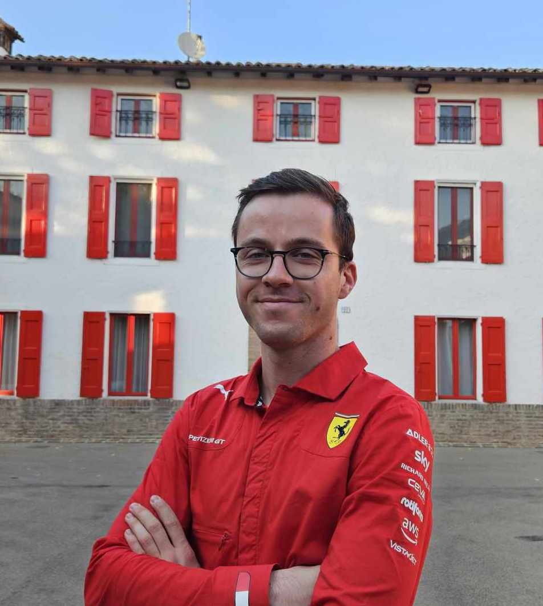

Mariage Mariana & Jules
Весілля Жуля та Мар’яни
23 septembre 2023
OrganisationOù et quand débute le mariageLe mariage débute au 48 rue de Boisdenier à 14h15. C'est là que la mariée va retrouver le marié. Les invités ne sont pas obligés de venir pour ce moment-là, et peuvent s'ils le souhaitent nous retrouver directement à la mairie. Les mariés iront par la suite faire des photos en ville Par la suite, tous les invités se retrouveront à 15h30 à la mairie de Tours. Comment aller au lieu de réception ?Apès la ceremonie de la mairie, un voiturage est organisé pour tout le monde pour aller sur le lieu de reception. Vous trouverez votre chaffeur dans le tableau ci-dessous: Les chauffeurs (qui se reconnaitront dans le tableau) doivent prendre connaissance de ce tableau pour être sur que toutes les personnes qu'ils doivent transporter ont été transportées. Pendant la réceptionAntoine, le frère de Jules, sera chargé d'organiser les évènements le Jour J! Il aura donc tout pouvoir pour designer des assistants pour l'aider! :) Comment revenir du lieu de réception ?Pour les personnes qui sont venues en voiture, elles pourront revenir en voiture à leur hotel respectifs. Pour les personnes qui n'ont pas de voiture, trois options s'offrent à elles: (i) soit elles trouvent un covoiturage pour revenir, (ii) soit elles prennent le "taxi mariage" organisé par Nicolas à partir de 2h du matin toutes les heures (dans ce cas presentez vous simplement à Nicolas à 1h50, 2h50, 3h50 ou 4h50 pour qu'il vous ramène), (iii) soit elles rentrent à pied (30 minutes de marche en moyenne).

Informations spécifiques pour les organisateurs |
ОрганізаціяДе і коли починається весілляВесілля починається о 14:15 за адресою rue de Boisdenier, 48. Тут наречена зустріне нареченого. Гості не зобов’язані приходити в цей час і можуть, за бажанням, зустріти нас безпосередньо біля ратуші. Потім наречений і наречена сфотографуються в місті Після цього всі гості зустрінуться о 15:30 біля турської ратуші. Як дістатися до місця прийому?Після церемонії в мерії, для всіх запрощених організоване перевезення автомобілем до місця прийому. Ви знайдете свого водія у таблиці нижче: Водії (які впізнають себе в таблиці) повинні прочитати цю таблицю, щоб переконатися, що всі люди, яких вони мають перевезти, були перевезені. Під час прийомуАнтуан, брат Жюля, відповідатиме за організацію подій у день весілля! Тому він матиме всі повноваження призначити собі помічників! :) Як повернутися з місця прийому?Люди, які приїхали на автомобілі, можуть повернутися на автомобілі до відповідного готелю. Для людей, які не мають автомобіля, доступні три варіанти: (i) або вони знаходять автомобіль для спільного повернення з іншими гостями, (ii) або вони їдуть на «весільному таксі», організоване Нікола з 2:00 щогодини ( у цьому випадку просто підійдіть до Ніколя о 1:50, 2:50, 3:50 або 4:50 ранку, щоб він міг вас завезти), (iii) або вони повертаються пішки (30 хвилин в середньому). Спеціальна інформація для організаторів |
Les mariésNous nous sommes rencontrés il y a... - Mariana, c'est quoi la date déjà? - Jules, ca n'a pas changé, c'est toujours ton anniv plus mon anniv. ... il y a 5 ans, le 15 septembre 2018 ! Et comment ne pas succomber au charme de cette belle ukrainienne ! Et de ce français aussi, d'ailleurs. Pendant tout ce temps, notre couple a construit une relation solide. Nous avons voyagé ensemble, nous avons appris la langue de l'autre, nous nous sommes manqués à distance, nous sommes tombés amoureux... Et maintenant, il est temps pour nous de passer à une nouvelle étape, celle du mariage. |
НареченіМи зустрілися... - Мар'яна : Яка дата нашої першої зустрічі? - Жюль : Це не змінилося, це твій день народження плюс мій день народження. ... 5 років тому, 15 вересня 2018 року! І як тут не піддатися чарівності цієї прекрасної українки! І цього француза, до речі. Протягом цього встого часу наша пара будувала міцні стосунки. Ми подорожували разом, вчили мову один одного, сумували один без одного на відстані, закохувалися... А зараз нам пора переходити на новий етап, одруження. |

Les parents de MarianaБатьки Мар’яни |
Les parents de JulesБатьки Жуля |
|

|

|
Les témoins de chocL'une colombienne, l'autre français. Derrière son apparence de tranquillité, ce couple explosif transforme le piment en dynamite ! СвідкиВона колумбійка, він француз. Попри спокійну зовнішність, ця вибухова парочка перетворює перець чилі на динаміт! |

|
QuandLe samedi 23 septembre 2023. Les mariés se retrouvent devant la mairie à 15h35. La cérémonie à la mairie se déroulera à 16h. Vous serez ensuite conviés à un cocktail, un diner puis une soirée qui finira tard dans la nuit. Le lendemain, pour ceux qui le souhaitent, un petit déjeuner sera organisé dans le centre de Tours, au 48 rue de Boisdenier. Vous pouvez venir à partir de 9h30. КолиСубота, 23 вересня 2023 р. Наречені зустрінуться о 15:35 перед мерією. Церемонія в мерії відбудеться о 16:00 за французьким часом. Потім вас запросять на вітальний коктейль, вечерю, а потім вечірку, яка закінчиться пізно вночі. Наступного дня для бажаючих буде організовано сніданок у центрі Тура, за адресою: rue de Boisdenier, 48. Ви можете приходити починаючи з 9:30 за французьким часом. |
OùLe mariage se déroulera à Tours. La célébration se fera à la mairie de Tours. Cliquez ici pour visualiser l'itinéraire. A 16h, nous serons avec vous à la mairie pour la cérémonie de mariage. Puis nous vous invitons au Manoir de la Tours, à Saint-Cyr-Sur-Loire, pour un cocktail, un dîner, et une soirée! ДеВесілля відбудеться в Турі. Святкування відбудеться в мерії Тура. Натисніть тут, щоб переглянути маршрут. О 16 годині ми будемо з вами в мерії на церемонії одруження. Тоді ми запрошуємо вас до Manoir de la Tours у містечко Сен-Сір-сюр-Луар на коктейль, вечерю та вечірку! |


|
Quel cadeau choisirNous habitons à Berlin et déplacer l'ensemble des cadeaux vers l'Allemagne sera compliqué! Nous n'avons donc pas réalisé de liste de mariage. Les invités pourrons bien sûr amener un petit cadeau symbolique s'ils le souhaitent et un coffret sera mis à disposition. Який подарунок oбратиМи живемо в Берліні, і перевезти всі подарунки до Німеччини буде складно! Тому ми не складали список весільних подарунків. Гості, звичайно, можуть принести невеликий символічний подарунок, якщо вони бажають, і поставити в нашу скриньку. |
Détails pratiquesOù réserver mon hôtel ? Nous vous conseillons de réserver votre hôtel dans Tours centre. Voici un hôtel que nous vous recommandons: The People J'ai besoin d'une voiture ? Non, il est possible de se rendre à pied, à la cérémonie à la mairie et au dîner à partir de Tours centre en 30 minutes. Cependant, nous recommandons d'avoir une voiture pour faciliter le retour à l'hôtel le soir après la célébration. Attention marathon Il y aura un marathon à Tours le dimanche 24 septembre, il sera donc difficile de se garer ou de se déplacer en voiture. Nous vous conseillons donc de venir en train ou en char à voile. Il y a un thème? Oui, voici la gamme de couleurs qui sera appréciée: |
Практичні деталіДе я можу забронювати готель? Радимо бронювати готель у центрі міста Тур. Якщо виникли найменші питання, звертайтеся до нареченої. Ось готель, який ми рекомендуємо: The People Мені потрібна машина? Ні, на церемонію та вечерю можна дійти пішки з центру Туру за 30 звилин. Однак ми рекомендуємо мати авто щоб ввечері після святкування було простіше повернутися до готелю. Увага, марафон У неділю, 24 вересня, у Турі відбудеться марафон, тому буде важко припаркуватися чи проїхати автотранспортом. Чи є дресс-код? Так, ось така кольорова гама буде доречна |
Le site sera mis à jour regulierement.
Вебсайт буде оновлюватися регулярно.